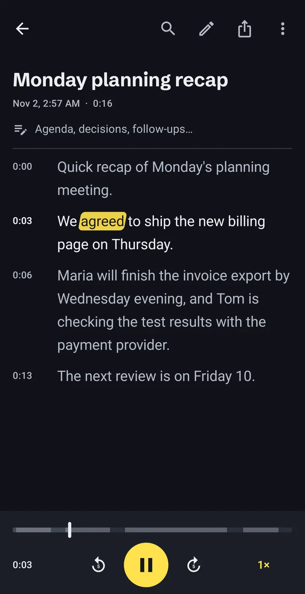
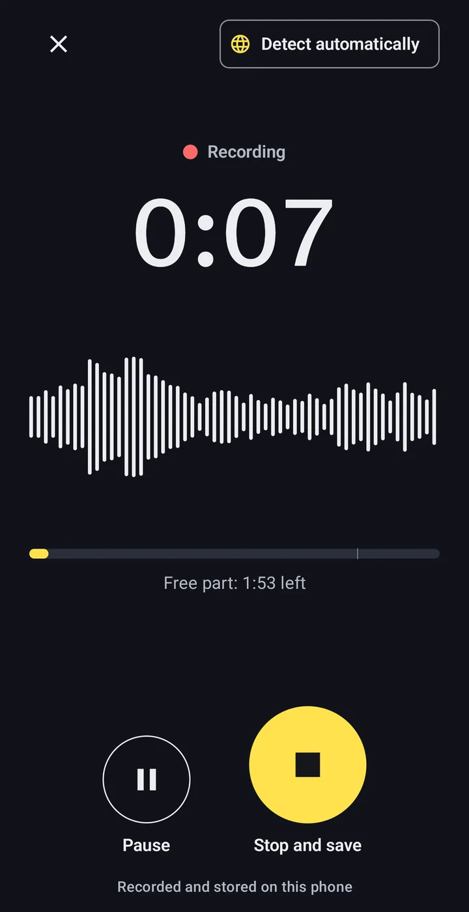
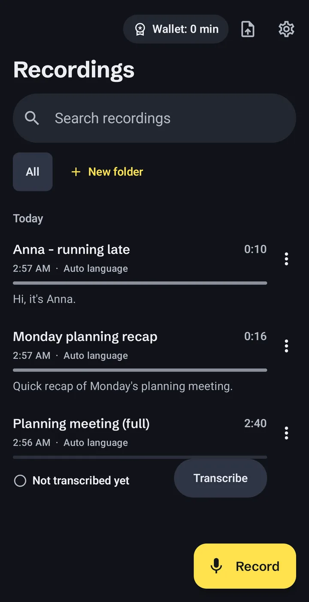
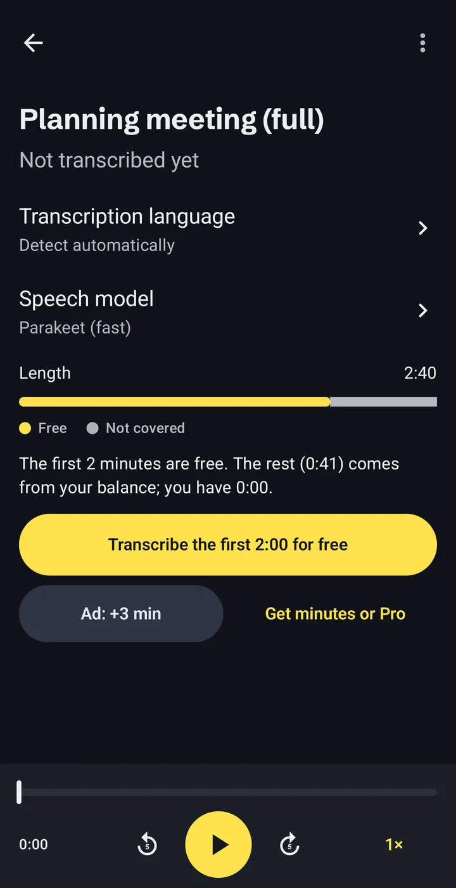

Speech to text that stays on your phone
Offline Audio Transcriber turns voice notes, lectures, interviews and any MP3 or video file into text on your Android phone. No account, no upload, and no internet needed once the speech model is on the phone.
- Account
- Not needed
- Speech model
- 671 MB, downloaded once
- Free
- 2 min of every recording

How offline transcription works
Three steps, all on the phone. The only download is the speech model, once.
-
Record, or open a file you already have
Use the built-in recorder, or import audio and video files, including voice messages saved from chat apps.
- MP3
- M4A
- WAV
- OGG
- MP4
- and other audio and video files

-
The phone does the transcription
The speech model runs on the phone’s processor, so the audio never leaves it. Long jobs keep running in the background with a progress notification.
One-hour recording60:00Time to transcribe~8:00Our own test on a Samsung Galaxy S23 Ultra. Older and cheaper phones are slower. -
Read, fix and export
The transcript has timestamps and follows the audio as it plays. Tap a word to jump to that moment, fix mistakes, search the text and sort recordings into folders.
- TXT
- SRT
- VTT
- Copy
- Share

What stays on the phone, and the three times it goes online
There is no account and no server of ours in the picture. You can check every line below in the privacy policy.
Stays on the phone
- Your recordings and imported files
- Transcripts and your edits
- Notes, folders and search
Goes online, and why
- Model
Downloading the speech model, once.From huggingface.co and github.com.
- Ads
Showing ads, including the optional ad that adds 3 minutes.Google AdMob. In the EEA, UK and Switzerland you choose in Google’s consent form.
- Purchases
Buying minute packs or Pro.Google Play. We never see your payment details.
No analytics, no crash reporting, nothing sold. Details in the privacy policy.
Speech to text in 24 European languages
The main model, NVIDIA Parakeet TDT 0.6B v3, understands these languages:
- Bulgarian
- Croatian
- Czech
- Danish
- Dutch
- English
- Estonian
- Finnish
- French
- German
- Greek
- Hungarian
- Italian
- Latvian
- Lithuanian
- Maltese
- Polish
- Portuguese
- Romanian
- Slovak
- Slovenian
- Spanish
- Swedish
- Ukrainian
An optional second model adds more languages. It runs on the same phone and is slower.
What it costs, before you start
Installing is free. You pay only for minutes beyond the free part, and you see what a recording needs before you transcribe it.
0:00–2:00Free. The first 2 minutes of every recording.
2:00–10:00Your minutes: from short ads or minute packs.
With Pro, the whole recording is covered, however long.
- Free part
- The first 2 minutes of every recording. No ad needed.
- A short ad
- Watch one to add 3 minutes. If an ad fails to load, nothing is blocked.
- Minute packs
- 60, 180 or 600 minutes. They never expire.
- Pro
- Unlimited minutes. Monthly, yearly, or a one-time purchase.
Prices are shown by Google Play in your currency before you confirm. Subscriptions renew until you cancel them in Google Play. If a recording needs more minutes than you have, the app transcribes the free part and tells you exactly how many minutes are missing.

Questions people ask first
Are my recordings uploaded anywhere?
No. Recordings, transcripts and notes stay in the app’s private storage on your phone. The app goes online only to download the speech model, to show ads and for purchases through Google Play.
Does it work without internet?
Yes, once the speech model is downloaded. Transcription itself needs no connection. Watching an ad for extra minutes and buying something do need one.
How long does transcription take?
On a Samsung Galaxy S23 Ultra, a one-hour recording took about 8 minutes in our own test. Older and cheaper phones are slower. You can leave the app; the job continues in the background with a progress notification.
How accurate is it?
It depends on the audio: quality, accents and background noise all matter. We do not publish accuracy figures. Check important transcripts before you rely on them; you can fix any word in the app while listening.
What is free, and what costs money?
The first 2 minutes of every recording are free. For more, watch a short ad (+3 minutes), buy a minute pack that never expires, or get Pro for unlimited minutes.
How big is the download?
The speech model is a one-time download of 671 MB. The app shows the size before it starts. Use Wi-Fi if your mobile data is limited.
How do I delete my data?
Delete recordings in the app, or uninstall the app to remove everything it stored. The speech models can be deleted in Settings.
Try it on your next recording
No account to create. The first 2 minutes of every recording are free.